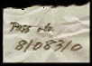

|
惡靈古堡-----敵人介紹
|
|
惡靈古堡-----敵人介紹
|
| 植物學Botany Book ~About Medicinal Herbs~ | 洋館二樓東側書庫 |
| 飼育員的日誌Keeper's Diary | 洋館一樓西側飼育員寢室 |
| 研究員的遺書Researcher's Will | 洋館二樓東側研究間 |
| 研究員的遺書Researcher's Will | 洋館二樓東側研究間（從Barry手上取得的版本） |
| 致保安部長的信Orders | 洋館二樓西側收藏室 |
| 通路密碼Pass Number | 洋館二樓鋼琴間由Barry處取得（僅Jill） |
| 植物42號的筆記Plant42 Report | 寄宿舍002號室 |
| 傳真Fax | 研究所地下三樓研究室 |
| 剪貼簿Scrapbook | 洋館二樓西側圖書室 |
| 研究所‧警備系統資料Security System | 研究所地下二樓映像資料室 |
| 研究員的信Researcher's Letter | 研究所地下三樓研究室2 |
| 有機化學實驗檔案"V-JOLT" Report | 寄宿舍003號室 |
| Barry的照片Barry's Picture | 研究所地下二樓置物室（Barry死亡時，僅Jill） |
| 密碼01Pass Code 01 | 研究所地下三樓研究室 |
| 密碼02Pass Code 02 | 研究所地下三樓停屍間 |
| 密碼03Pass Code 03 | 研究所地下三樓動力室2 |
| Eric的信 | 洋館二樓西側圖書室2（致命寂靜獨有） |
| 非File資料?幻燈片 | 研究所地下二樓映像資料室 |
|
植物學?關於具有藥效的植物? 人類自太古以來就利用各種植物療傷治病。本書以Arklay山地野生的三種草藥為例，敘述其藥效的梗概。 Arklay山地周邊野生的藥草中，存在著綠色、藍色、紅色三種種類，他們各具有不同的功效。 綠色的藥草可以回復體力﹔藍色的藥草可以解動物之毒﹔而紅色的藥草算是個例外，因為若只是單獨使用它，將不會產生任何效果。 藥草從古時候開始就被人以調和的方式發揮各種效果。例如綠色與綠色調和，雖然只有一點點，但回復的效果確有上升。 實驗調和這三種藥草，來創造出更多樣的藥，這個問題就留給你自己，畢竟自己動手是獲得知識的最佳途徑。 May. 9. 1998 晚上跟警備員Scott、Alias以及研究員Steve完撲克牌。Steve那傢伙手氣一直好得不得了，八成 是出老千，把我們當傻瓜。 May. 10. 1998 今天上頭的研究員交代說要照顧新的怪物，是隻像是剝了皮的大猩猩怪物。上頭說用活生生的食物比 較好，所以丟豬進去，結果他們扯下 豬腳、拉出內臟，玩弄一番才把他吃掉。 May. 11. 1998 今天早上五點左右突然被穿著像太空服的Scott叫醒，要我也穿上太空服。聽說好像是研究所發生事故了。說到那些研究員，老是不睡覺熬夜 做實驗，所以才會發生這種事。 May. 12. 1998 從昨天開始就一直穿著這討厭的太空服，背部悶死了，又癢的厲害。因為心理很煩，乾脆就不餵那些狗吃飯來出氣，真是大快人心。 May. 13. 1998 今天因為背部實在太癢了而去了一趟醫務室，結果背部被貼了一大快絆創膏。好消息是醫生說我可以不用穿太空服了。看來今晚可以睡個好 覺了。 May. 14. 1998 早上起床發現不只背部，連腳都長出了腫瘡。狗籠變得出奇安靜，所以我拖著腫脹的腳前去查看，發現狗的數目根本不對。才三天不餵他們 吃飯就逃跑，要是讓上頭發現可就遭了。 May. 16. 1998 聽說昨天有一名想從洋館逃出去的研究員被射殺了。 晚上全身?熱熱癢癢，一抓破胸口腫瘡?肉就腐爛剝落，我到底?怎麼??了。 May. 19. 1998 終 於 退 燒 了 可非常癢 今天 肚子餓 吃狗 飼料 May. 21. 1998 癢 癢 Scott來了 臉爛的厲害 殺掉 好吃 親愛的Alma，你必須承認這封信對我來說既悲又喜。我想我無法再跟你說話，因為我正拿槍對著我自己。Alma，請冷靜的繼續讀下去。 我曾對妳說我受到聘請而來到一家製藥公司的研究所。上個月這裡發生了病毒外洩的意外，我們都在逃。我的同事們都被感染並且死了，說 正確一點，他們都變成了活死人。他們依然四處遊蕩。 他們不停地敲打著我的房門，可是他們的眼睛已經失去光采。可惡的病毒奪走了他們的人性，包含愛、快樂、悲傷、恐懼和幽默，永遠地奪 走了，甚至妳和我過去的美好回憶。 是的，我受到了感染。 我用盡了所有方法終於把症狀的惡化延遲了幾天，妳在我心中一天一天地消失是我最心疼的事。因此我選擇了安樂死，而不願成為一具活死 人。 一小時後，我大概就會進入永遠不會再醒來的睡眠之中了吧。我衷心地希望妳能了解我所做的決定。 永別了........ 永遠愛妳的 Martin Crackhorn 研究員的遺書（從Barry手上取得的版本） （信的前半部已經破損無法判讀，以下是剩餘的內容） 是的，我受到了感染。 我用盡了所有方法終於把症狀的惡化延遲了幾天，妳在我心中一天一天地消失是我最心疼的事。因此我選擇了安樂死，而不願成為一具活死 人。 一小時後，我大概就會進入永遠不會再醒來的睡眠之中了吧。我衷心地希望妳能了解我所做的決定。 永別了........ 永遠愛妳的 Martin Crackhorn TOP SECRET July. 22. 1998 2:13 致保安部長： X-Day將近，請在一周內依序且盡快執行以下的作戰策略。
 那件事故後的第四天，植物42號的成長速度讓人非常驚訝。 和其他植物相比，42號由於受到了T病毒的強烈影響，目前已經成長到難以想像宿主植物的地步了。 跟其形狀類似的生態，恐怕尋遍整個地球都找不出半種。 植物42號的營養來源有二： 一是從長到地下室的根獲取的養分。事故後不久，發狂的職員破獲了地下室的水槽，現在地下室淹水，流至該處的某些藥品成分導致42號的 急速成長其實是不難想像的。 甚至從地下室延伸出的植物42號的一部分，沿著導管在一樓的天花板形成球根狀垂吊下來。從球根伸出得好幾條藤蔓成了另一個或取養分的 手段。 植物42號一察覺到獵物就會以其如烏賊觸手般的藤蔓捆住獵物使其無法動彈，然後利用附著藤蔓內側的吸盤吸取血液。 而且牠好像還具有適度的智能。在用餐及睡眠時會以藤蔓纏在門上，防止外敵入侵。 已經有數名職員成為牠的肥料。綜合活著回來的人所提供的情報，他說牠好像在守護著什麼東西的樣子，這其中應該隱藏著某些秘密，只 是，不管怎樣人類也不可能理解植物的心事吧。 May. 21. 1998 Henry Sarton 收訊者 衛生管理部門 統合本部長 發訊源 Raccoon City特研部 災害對策委員會 本分文件嚴禁無關人員閱覽，且了解本文件內容後必須將之銷毀。 關於此次「T-病毒」外漏事件，本委員會實地調查後推斷，災害的估計遠超過當初的報告。 第一個問題，雖然目前要取得實際人數的正確資料非常困難，但估計半數以上的研究員在受到「T-病毒」感染時即已死亡。而且幾乎所有倖 存者都出現了「T-病毒」感染者特有的症狀。 第二個問題，雖然安全系統勉強啟動了，但特務警備隊也幾乎全滅，屬於本社最高機密的研究事項將毫無防備地暴露在外。這點尤其刻不容 緩，希望馬上謀求對策。 而第三個問題與第二個問題有所重疊，亦即大多數的實驗體已呈失控、暴走的狀態。事實上我們探查的結果，研究員之中，被實驗體殺害的 死者絕不在少數。說那些屍體被虐殺是很恰當，也意外地證明了我們研究的成功﹔但這樣下去的話，極有可能提供新聞媒體令人憂心的報導 題材。 總之我們希望的事〝根本而且快速的解決對策〞。尤其是Raccoon州警和S.T.A.R.S.很快便會插手，非想辦法阻止他們不可。 Raccoon City報導1998年5月27日 野獸的攻擊？支離破碎的女性 5月20日，大約晚上10點，一名年約20歲的女性屍體被路人發現陳屍在Raccoon City的Cider區Marble河邊。 Raccoon City的警察認為這是灰熊或是其他動物所為，因為在屍體的手臂和左腳上有極深的齒痕。 因為她剩下的一隻腳上穿著登山鞋，所以判斷她是在Arklay山區遇害然後跌落瀑布。警方正在比對她的身分。 Raccoon City報導1998年6月16日 Arklay山區有怪物？ 有民眾宣稱他們在Arklay山區發現怪物。這種怪物據說像大型狗一般大，通常都群聚在一起，跑起來像狼一樣快。聽起來像是一群野狗，但 是牠們擁有驚人的力量，而且難以捕殺。 他們說這些狗不會傷害人除非你驚嚇到牠們，所以放聰明點，遠離Arklay山區。 但是假如你想冒險，就去試試看，你想嗎？ Raccoon City報導1998年7月9日 神秘的Arklay山區！山路的封閉 由於Arklay山區連續的災害，當地政府決定封鎖通往山麓丘陵的山路。 同一時間，雖然民中依然在談論山區裡的神秘怪物，但是Raccoon City的警察S.T.A.R.S.依舊試圖開始搜尋失蹤者，因為Arklay山區相當的廣 大，並且大部分覆蓋著原始的森林，所以他們估計這是一項相當困難的任務。 B1直昇機坪 直昇機坪只限政府官員及經營幹部使用。但事故發生時不在此限。 B1搭乘直昇機用通路 沒有顧問研究員或警備所長同行者不得進入。未確認之進入者將立刻射殺。 B1電梯 緊急災害發生時，機能停止。 B2F映像資料室 映像資料室隸屬特研部管轄。關於利用的裁量權委由Keith Arving室長決定。 B3F監禁室 監禁室由衛生管理部門管理。要將病毒注入實驗體時，須有顧問研究員（E‧Smith,、S‧Ross、A‧Wesker）同行。 B3F三重鎖之門 禁止無出示所有密碼文件之人進入。 密碼除了由各區的研究主任經由專用輸出裝置所連結的之外，一概不予承認。 B3F動力室 因為燃料使用了硝基化合物的關係，除本社派遣的監督官以外，嚴禁進入。但顧問研究員接到特別指示時不在此限。 B3F密碼輸出裝置 禁止研究主任以外之人使用密碼輸出裝置。 B4F最重要機密事項 關於投入「T-病毒」的「暴君」的經過報告........（以下無法判讀） 給我親愛的Ada： June. 8. 1998 Ada，當妳在看這封信時，正意謂著我已不再是我了。 今天檢查的結果，出現如我所預料的反應........是陽性。一想到再不久就會變成那樣子，我都快瘋了。 Ada，妳現在並沒有受到感染。或許是不至此，但倘若妳是最後一個人的話，希望妳帶著 映像資料室的資料到動力啟動室啟動自爆裝置後逃 離這裡，然後利用媒體將所有的事公諸於世。 如果保全系統機能正常的話，這裡所有的鎖都會解除。我已將系統設定好了，只要在管理室的終端機打入我的名字，再輸入密碼就可以選 取。密碼是「Ada」，妳的名字。 要解開B2映像資料室的鎖，必須妳我的名字連結之後，再輸入一個密碼。密碼寫在下面，相信聰明的妳一看就懂。 這是我最後的請求，如果妳發現完全變了樣的我，Ada，請用妳的手讓我解脫吧！ 妳親愛的John筆 在感染暴君病毒而共同生長的植物細胞中發現幾點共通的性質，在上次的報告中已有提及。 但是在幾項實驗中，發現了一件有趣的事情，那就是我們在該實驗中使用的「UMB」系列藥品之一 的「UMB No. 16」中，含有能讓這些細 胞急速壞死的成分。 我們將UMB No. 16取名為「V-JOLT」。在時間的計算上，以植物42號為例，若直接把「V-JOLT」灑到其根部，不到五秒鐘，整株就會死 亡。 至於製造方法則是只要把UMB系的藥品依以下步驟加以混合即可。但UMB系的特徵是可能產生對人體有害的瓦斯，所以在處理上必須十分 小心。 首先，我將UMB系列藥品的種類與特徵簡單列出： UMB No. 2紅 UMB No. 4綠 UMB No. 7白 UMB No. 13藍（有刺鼻的味道） NP-003紫 Yellow-6黃 UMB No. 10橙 V-JOLT (UMB No. 16) 茶褐色
給David 雖然很不好意思，不過可以麻煩你找書嗎？上次喝醉的時候，在寄宿舍的大廣間把書給弄丟了。那是非常重要的書。一定要找到，拜託你 了。 幻燈片（生化武器官方報告Bio‧Organic Weapon Official Report）
|
這裡是惡靈古堡的專屬網站，建議您使用1024*768以上解析度、IE7.0以上瀏覽，本站為繁體中文Traditional Chinese Big5編碼
惡靈深淵Biohazard Abyss